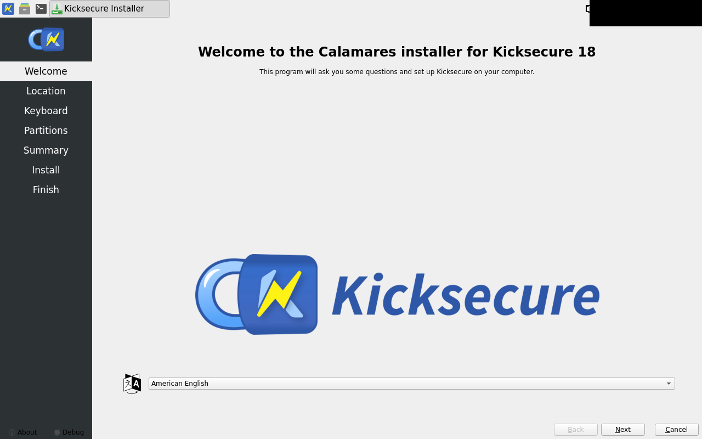
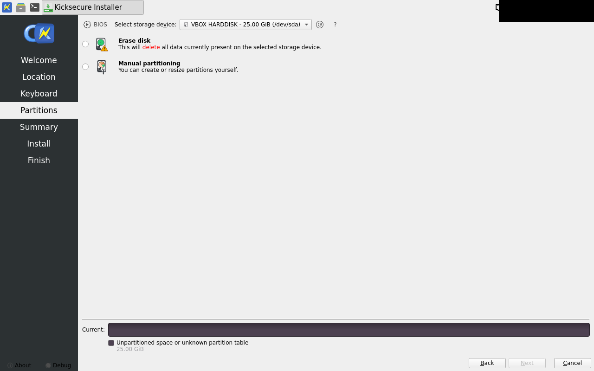
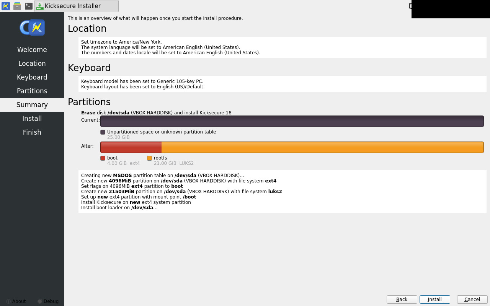
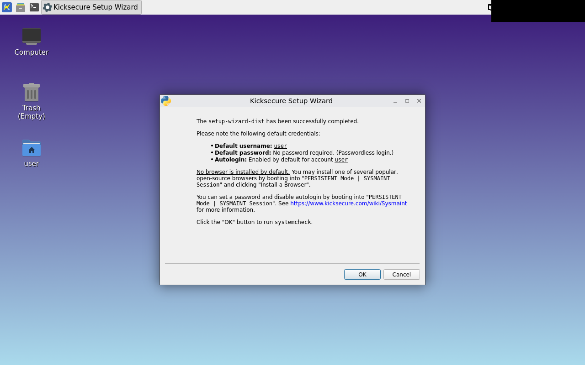

Firmware lane pass
declared bios · detected BIOS · verified against the declared lane
[ -d /sys/firmware/efi ] -> BIOS
mokutil --sb-state -> EFI variables are not supported on this system
calamares-install fail
exit 5
check 8 (systemcheck) FAILED:
command: systemcheck --cli --ci
exit: 1
output:
[WARNING] [systemcheck] systemd journal check result: Could not read the systemd journal (read failed with exit code 1).
Some journal-based checks could not be completed, so this is NOT a clean result. A denied privilege (privleap), a broken journalctl, or a corrupted journal can cause this. Any messages still detected are shown below.
[INFO] [systemcheck] Connected to Tor.
[INFO] [systemcheck] Kicksecure[1] is a research project.
Links:
[1] https://www.kicksecure.com
[INFO] [systemcheck] user-sysmaint-split installation check[1]: Installed
Links:
[1] https://www.kicksecure.com/wiki/sysmaint
[INFO] [systemcheck] user-sysmaint-split session detection result: USER Session.
[INFO] [systemcheck] Kicksecure Login[1] Security Check (Colors[2])
:
+----------+--------------------------------------+
| Users | Password GUI Autologin |
+----------+--------------------------------------+
| root | Locked (Present) Disabled |
| user | Absent Enabled |
| sysmaint | Absent Enabled |
+----------+--------------------------------------+
You can adjust these settings using "Manage Passwords" and "Manage GUI Autologin"
in the System Maintenance Panel.
See also: Physical Security[3].
Links:
[1] https://www.kicksecure.com/wiki/Login
[2] https://www.kicksecure.com/wiki/Systemcheck#Login_Security_Check_-_Meaning_of_Colors
[3] https://www.kicksecure.com/wiki/Systemcheck#Physical_Security_Check
[INFO] [systemcheck] Kicksecure APT Repository: Enabled.
When the Kicksecure team releases TRIXIE updates,
they will be AUTOMATICALLY installed (when you run apt-get dist-upgrade)
along with updated packages from the Debian team. Please read https://www.kicksecure.com/wiki/Trust to understand the risk.
If you want to change this, use:
sudo repository-dist
[INFO] [systemcheck] Debian Package Update Check: Checking for software updates via apt-get... ( Documentation: https://www.kicksecure.com/wiki/Update )
[WARNING] [systemcheck] Debian Package Update[1] Check Result: apt-get reports that packages can be updated.
Please update this machine:
Reboot into PERSISTENT Mode | SYSMAINT Session | system maintenance tasks and click "Install Updates" in the System Maintenance Panel.
Links:
[1] https://www.kicksecure.com/wiki/Update
[INFO] [systemcheck] Please donate!
See: https://www.kicksecure.com/wiki/Donate
new -- needs approval welcome — no approved golden yet

new -- needs approval partitions — no approved golden yet

new -- needs approval summary — no approved golden yet

new -- needs approval install-done — no approved golden yet

new -- needs approval first-boot — no approved golden yet
